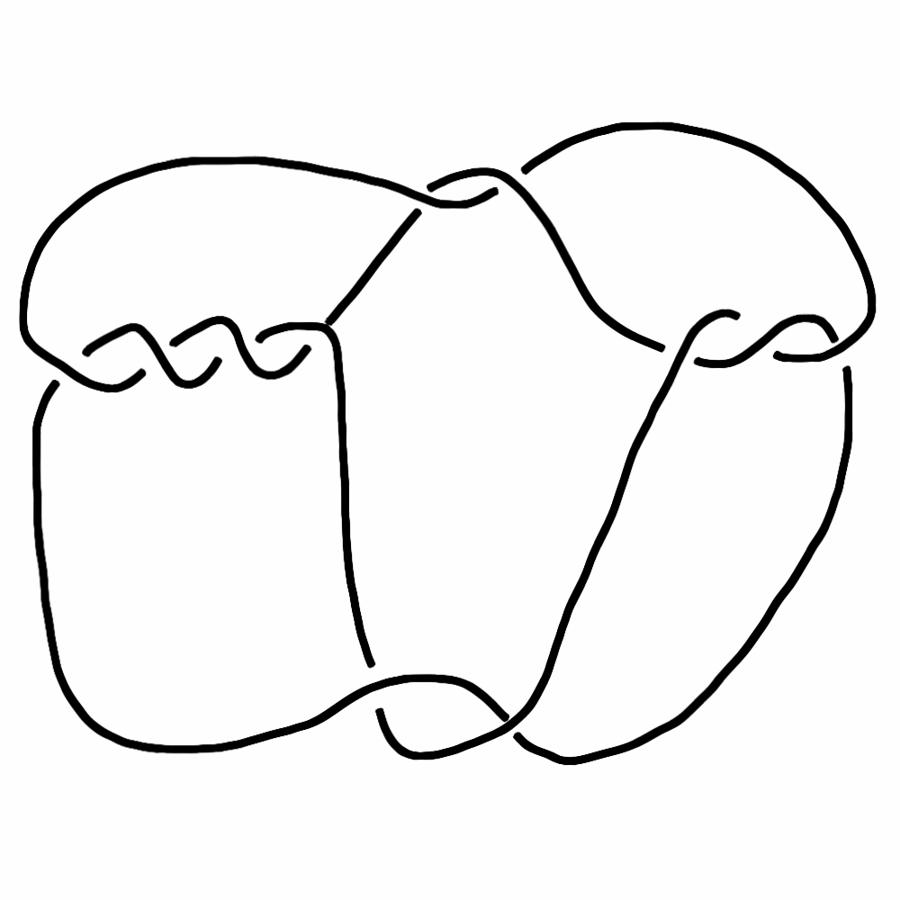
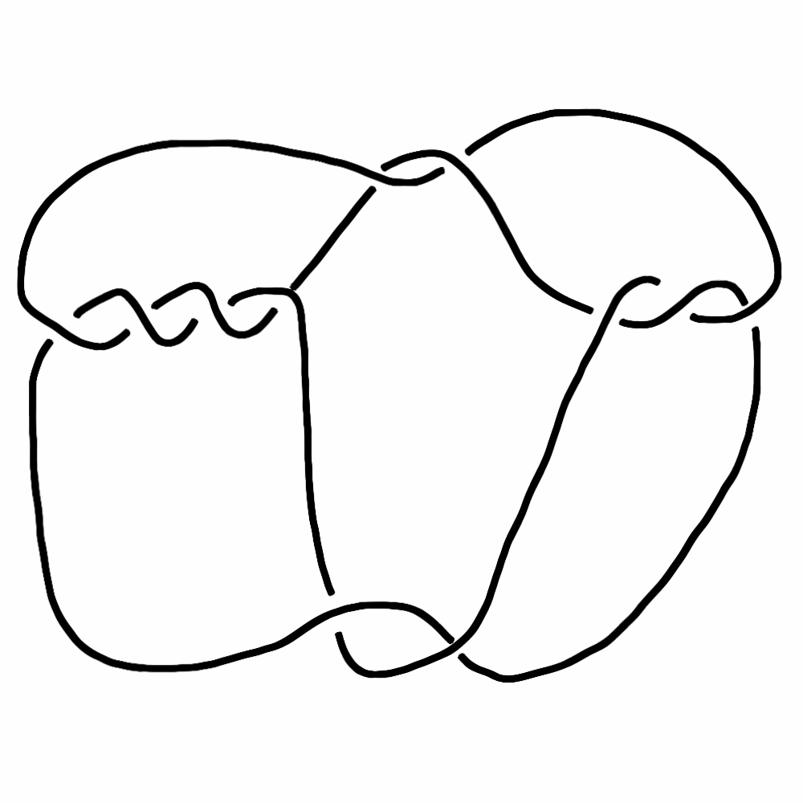
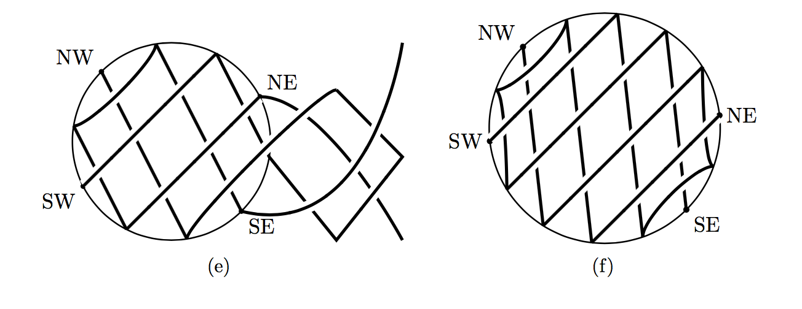

Weaves for Tangles
Fifth Annual Conference
for the
Exchange of Mathematical Ideas
Theron J Hitchman
University of Northern Iowa
joint work with Mark Ronnenberg
Mark in Summer 2016
joint work with Mark Ronnenberg
Mark in Spring 2014
Knots!
 

Reidemeister Moves


Milnor's "crookedness"
In On the Total Curvature of Knots (1950), Milnor defined the crookedness of a knot.
m(K) is the minimum over all possible positions of the knot of the number of local maxima with respect to the height function.
Bridge Index -- planar view
Bridge Index -- spherical view
Conway's Classification Scheme
Late 1960's
Tabulating Knots is hard, but gets a little easier.
Conway's Scheme pt 1; 4vcpg's
4-valent connected planar graphs
Conway's Scheme pt 2; tangles
Rational Tangles
Non-standard Rational Tangle
Standard Rational Tangle
This is the same tangle!
Conway's Classification
Each rational tangle has a well-defined rational number associated to it. Two rational tangles are equivalent as tangles if, and only if, their fractions are equal.
Example, again

Schubert's Theorem
Each knot of bridge index 2 has associated to it a pair of relatively prime integers, p and q. Two knots with data (p,q) and (p',q') are equivalent if, and only if, p=p' and either q=q' modulo p, or qq' = 1 modulo p.
The Surprising Equivalence
Schubert's Methods
"Normalize," and then rely on the classification of three dimensional lens spaces! (Schubert was a student of Seifert.)
Kauffman et al
The relationship
Theorem: Every knot of bridge index 2 is the closure of a rational tangle, and vice versa. Conway's fraction of the tangle turns out to be p/q, where (p,q) is Schubert's normal form data.
Schubert's methods
- same "normalization"
- lots of geometric manipulation (viergeflechte)
Toro's approach

Can we "do better?"
Weaves definition
From here on, all of the new images were made by Mark Ronnenberg.
Reminder: Bridge Index -- spherical view
An Observation in 3D
The Novelty
We can build rational tangles into weaves directly with a very simple scheme, and control the fractions along the way.
And every step is easily reversible.
Weave in from the right
Weave in from the right
Weave in from the right
Weave in from below

Weave in from below
Weave in from below
Now, induct!
The argument has got a few layers.
still to-do...
We can reprove that the class of rational tangles is the class of knots with bridge index 2, and control the fractions. But not quite
- prove Conway's theorem from scratch
- prove Schubert's theorem from scratch